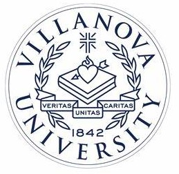
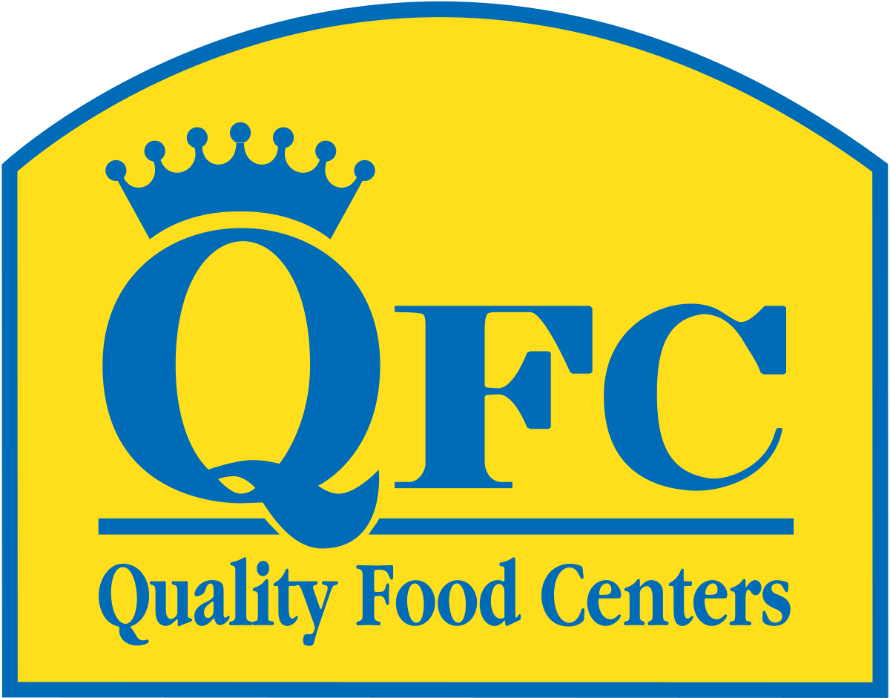

Revature Pro - Java Intern Backend
Feb 2025-Apr 2025
Mastered programming skills in Java, SQL, RESTful API Construction and Spring Framework. Implemented project work including construction of functional REST APIs using Test Driven Development methodologies. Completed 110 Coding Activities and showcased comprehension through fourteen (14) graded evaluations. Leveraged Java APIs to write algorithms to solve various challenges and problem sets.
Costco Wholesale (Issaquah) - Front End Assistant
Jun 2024-Jun 2025
Provide exceptional customer service at top 5 highest trafficked Costco warehouse, training new front end hires. Demonstrate flexibility and learning, cross-training in cashiering, deli, gas station, produce, food court, and E-blocks. Maintain cart supply and assist members with loading large items in parking lot.
Villanova Learning Studio - Computer Science Tutor
Oct 2023-May 2024

Tutored and mentored beginner computer science students 6+ hours a week in programmatic tasks. Brought record-breaking 42% increase in total sessions for studio by leading outstanding, detail-oriented appointments. Expanded tutee comprehension assisting with labs, homework, and studying for Data Structures & Algorithms I-II courses
Launch Consulting Group — Technology, Stratgey, & Architecture Intern
June 2023-August 2023
I was selected to participate in an 8-week long internship program with LCG. On my team of three interns within the TS&A studio, we researched industry relevant applications of generative AI. I also spearheaded the development of a internal company health dashboard. On my projects page, you can see the data I worked with and the visuals I was able to produce with HTML, CSS, and JS.
Vatican Telecommunications Office — Internet Service Provider Intern
September 2022-December 2022

Working as an intern at the Vatican was a very unique experience. I passed the Swiss guards everyday with my special ID to get to my office. I worked 12 hours a week with mostly Linux, backend programming. I set up Wordpress hosted on an Ubuntu virtual machine web server. I worked with MySql databases to host wordpress sites. I created complex, detail oriented diagrams of the network infastructure of my virtual machines environment. I set up an instant messaging server, graphically customized with CSS using the RocketChat localized server service.
The Home Depot — Hardware Associate
June 2022-August 2022

Working as a Hardware Associate, I provide customer service to customers ranging from contractors who face tight deadlines and need their tools and equipment quickly, to DIY home improvement people who have less industrial needs. Besides organizing and stocking the aisles during downtime, I also complete the tedious process of re-keying locks and cutting keys which requires a good amount of dexterity. Overall, I help ensure that customers can get in and out of the highest grossing Home Depot of the region promptly, finding their items without difficulty.
Quality Food Center (QFC) — Produce Clerk and Cashier
July 2019-December 2021
